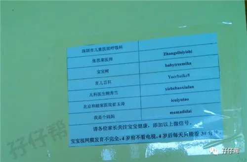

01
圈圈满两个月的时候，因肺炎住院，在深圳市儿童医院呆了7天。
虽然圈圈出院的时候依旧咳嗽，但是在这7天里，我收获很多喂养婴幼儿的小窍门，都是住院部的小护士免费传授的！
我有点不想出院的感觉了！呵呵！
出院的时候，有护士小姐姐看到我这个新手双胎妈妈一脸懵逼的样子，建议我多关注育儿专家的公众号，可以学习到很多婴幼儿护理知识。
比如婴幼儿常见的发烧，咳嗽，感冒等小病痛，几乎都可以在这些育儿公众号上得到或多或少的提示和建议。
的确，圆圈生病的时候，我总是像无头苍蝇一样急急忙忙往医院跑，然后苦等个把小时只为了区区三五分钟的看诊。
完了之后就是抽血打针吃药，直到孩子病好了都不知道他们为啥生病，为啥吃药。
我几乎没有时间没有机会去和医生真正沟通过，去医院前准备好的所有问题，背得滚瓜烂熟，甚至写在一张字条上，等见到医生的时候，要么就着急忘记问，要么就时间紧迫没有机会问。
现在互联网科技的广泛传播，衍生出很多大大小小的育儿公众号，有些公众号确实非常科学靠谱，的确解决了我的燃眉之急，帮助了很多像我这样的新手父母少走弯路。
儿童医院的公告栏上也推荐了些育儿公众号，我都关注了，说说我对这些育儿公众号的使用心得和体会！
02
以下公号来自儿童医院的推荐
儿科医生鲍秀兰 ID: xiehebaoxiulan
这个公众号的推文，我几乎都看过。因为圆圈是早产儿，护理和喂养与其他宝宝不一样，鲍秀兰本身是儿科医生，有专门针对早产儿关于喂养和护理方面的养育知识介绍。
当我还是个懵懵懂懂的新手妈咪的时候，很庆幸接触到鲍秀兰医生的科普文章，非常受益匪浅。
也是在这些靠谱专业的育儿知识陪伴下，我才慢慢过渡到一个处事不惊，临危不乱的女汉子妈妈！
张思莱医师 ID：zhangsilaiyishi
一个与鲍秀兰医生同款同类型的公众号，张思莱也是一个儿科医生，大家都亲切地叫她张奶奶。
里面的推文也是由有医学背景的医生或者育儿专家撰写的，非常正规靠谱。直到现在，我还关注着这个号。
宝宝树 ID：babytreemika
相信每一位宝妈在孕期的时候就已经下载了宝宝树的APP，然后每天都要打开宝宝树看一下里面对胎宝宝的状态描述。
这个公众号非常全面，从备孕到孕期到分娩再到育儿等，知识面非常丰富广泛。但可能太泛了，反而不够专业。
我只是在孕期有参考过宝宝树，在养育圆圈的问题上，觉得宝宝树没有参考价值。
育儿百科 ID:yuerbaike8
这个公众号主要是介绍宝宝的疾病护理，如发烧，过敏，咳嗽，腹泻等，还有一些家庭情感等方面的推文。
我用的较少，有时候圆圈感冒，感觉不是很严重，我会参考里面的案例在家给圆圈护理。
但有些信息良莠不齐，不能全信。
北京和睦家医院崔玉涛 ID：icuiyutao
应该每一个宝妈都听说过“崔神”吧。说的就是他了，崔玉涛。他也是个儿科医生。
起初很迷他，看他的公众号和微博，还有视频。但是后来，可能我的育儿知识越来越丰富了，感觉崔神说的有些育儿知识不是特别赞同，后面关注的比较少。
不管怎样，他依然是众多宝妈心目中无法替代的育儿专家！
我是个妈妈 ID:mamadidai
不知道为什么儿童医院会推荐这个公众号，里面的推文大多数关于家庭情感和女性婚姻方面的内容。
关于育儿方面的知识比较少，关注了一段时间后就取消了。
03
其实圆圈成长到不同阶段，我需要的养育知识也会随着变化。
圆圈一岁前，因体质差经常跑医院，我则侧重关注于小儿疾病护理这块的公众号。
1岁之后，更多是侧重关注孩子辅食添加和生长发育方面的养育知识。
随着圆圈的成长，经历多了，凭自己的经验，再结合一些育儿专家的建议，基本上可以解决一些小问题。
圆圈2岁半的时候，在圆圈爸的老家过春节，也许是水土不服，深更半夜重感冒了，流鼻涕咳嗽，眼睛都发红了。
在这山卡拉的地方，硬是熬到第二天早晨才等到车去当地的诊所。诊所的医生只是轻描淡写，简单看了下就说要打针输液。
好在我不糊涂，凭我当母亲的直觉，圆圈还不至于病到要打针输液这个地步。
再看看这诊所的卫生极差，苍蝇满天飞，还有那随意丢弃的医疗废物...
我果断带圆圈回去了，在药店买了小柴胡和沐舒坦，按说明书给圆圈服用。其次就是狂灌温开水，只要不吐，就给圆圈喝进去！
庆幸，他们的感冒症状持续了3天，基本上就没事了。
我靠的是啥？凭啥打脸诊所医生？
我不靠啥，也不凭啥！我其实心里也没有底。
可能更多的是因为自己为人母之后，凡事亲力亲为，对圆圈的了解越来越深刻，从而形成一种不言而喻但是关键时刻又很清晰明朗的感觉。
或许这就是母亲的本能吧！
04
为人母，内心一定要强大，尤其是双胎妈妈，平时多积累些科学靠谱的育儿经验。别到“书要用时方恨少”，乃至方寸大乱，最终遭罪的还是孩子！
但是并不是所有育儿公众号内的推文都可以参考，即使再管用有效的经验也未必适合自己和孩子。
这个得看实际情况以及孩子成长到不同阶段的需求，有侧重点，有针对性。
更重要的是，要擦亮双眼，注意甄别公众号推文里的信息。万不可无底线地轻信！
圆圈刚出生到一岁那会儿有小儿屏息综合征。症状就是哭的时候会一口气上不来，半天没反应，严重时会呼吸暂停，发绀等。
我看到某公众号上说，当宝宝屏息发作的时候，可以用力拍打宝宝的脚底，刺激他哭。
我真的照做了。
结果，因为我没有及时地把圆圆抱起安慰，圆圆那次哭了半天怎么喊都没反应，整整持续了30几秒钟，终于有反应的时候，嘴唇周边都发紫了。
因为这件事，我被全家人轰炸了许久，而我内心也是愧疚不已，悔不当初！
后面去体检的时候，儿保科医生也给出建议，让发作的时候，抱起孩子，到空气好的地方，轻声安慰，很快会得到缓解。
我也查阅了相关资料了解到其实小儿屏息综合征，常见于早产儿，多半是由于身体机能发育上不够完善导致的。
一般随着年龄的增长，发作次数会慢慢减少然后消失，属于自愈性疾病。
通过这次事件，我对各种育儿公号上的文章都非常谨而慎之地对待了。
因此，不管是否靠谱科学，管用才是硬道理！
那么孖仔帮公众号管用吗？哈哈，我也不知道啊！要问你自己哦！
孖仔帮的推文是圆圈妈在养育双胞胎男孩时的心得体会，纯属个人经验。希望我的经验分享可以帮助更多的双胎家庭。
欢迎双胎宝妈宝爸跟我一起分享交流探讨双胎育儿经验！
END
本文系圆圈妈原创，来源于孖仔帮，专注双胞胎孕期育儿经验分享，著作权归孖仔帮所有。
彩蛋：各位双胎妈妈，更多孖仔帮原创育儿文章请猛戳 "阅读原文" ，或者直接上圆圈妈的个人博客，大把双胎孕期育儿心得经验分享。
